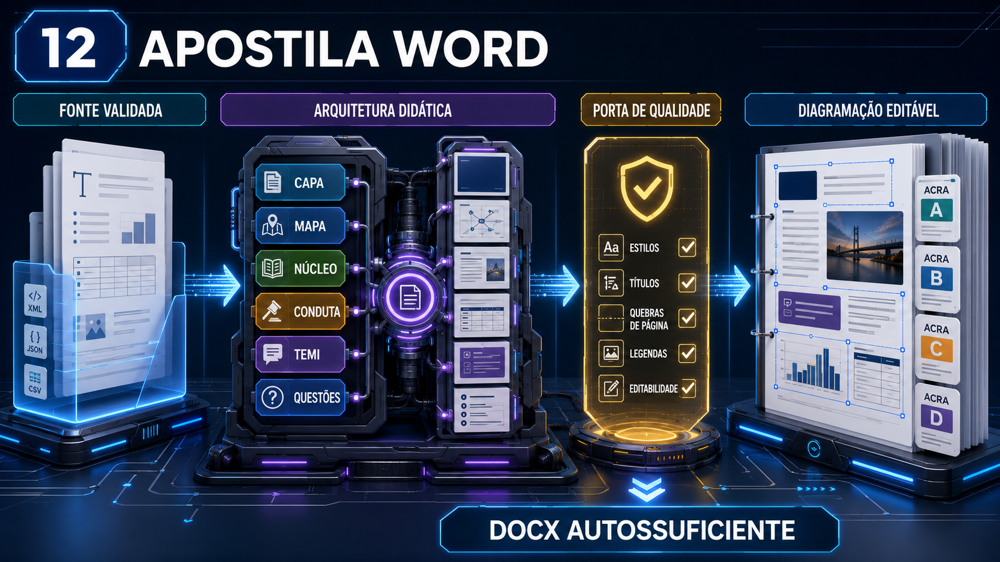
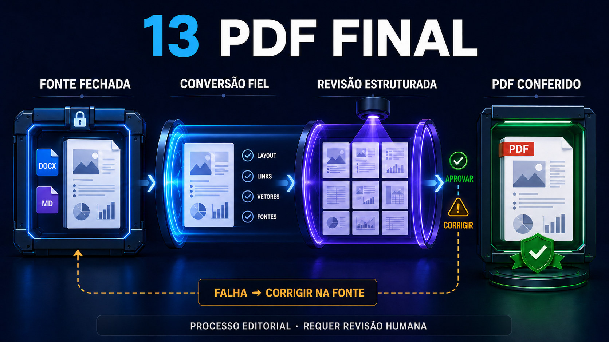
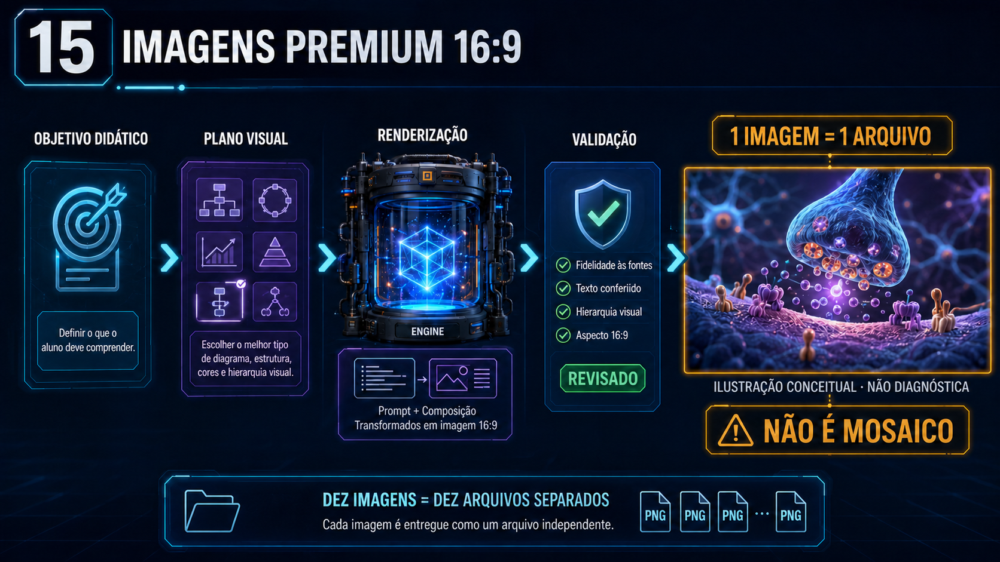
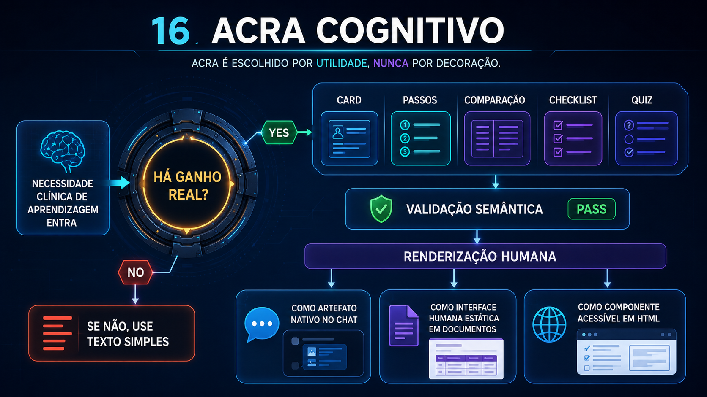
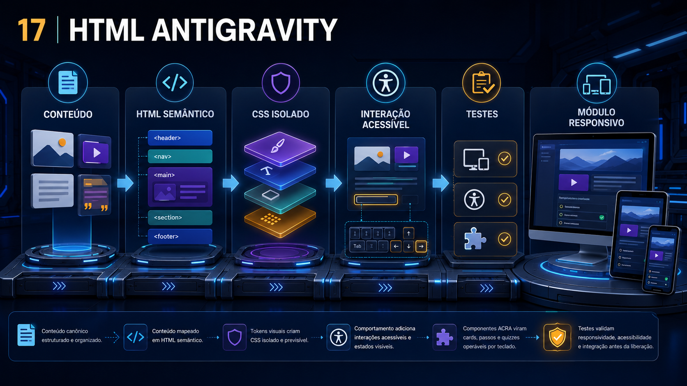
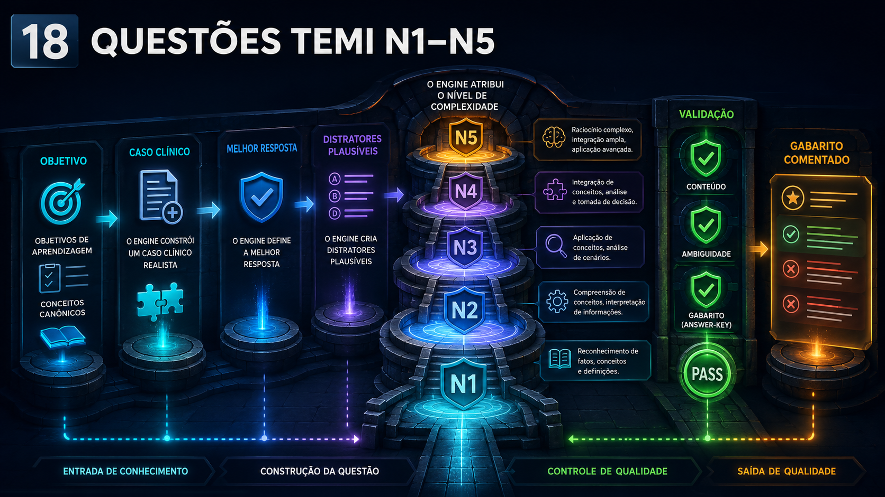
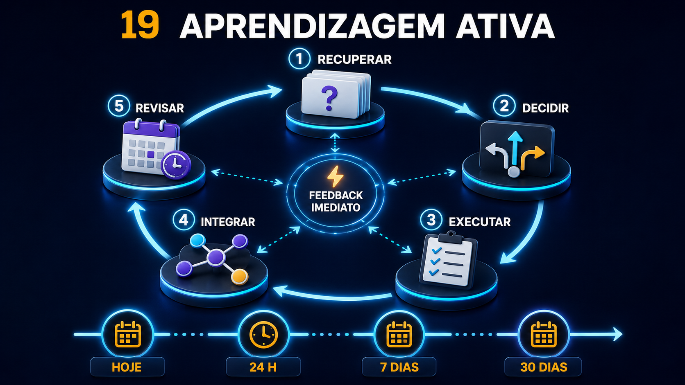
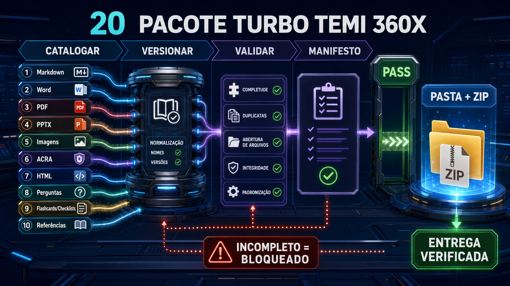

O que é?
Um atlas de oito etapas para criar, renderizar, estudar, testar e empacotar um produto educacional.
🧠 ENGENHARIA COGNITIVA · U2 + U3
Produto auditado · publicação bloqueada
Uma esteira visual para transformar uma fonte validada em produtos educacionais rastreáveis — sem confundir meta de qualidade com certificação e sem promover conteúdo clínico sem referência própria.
RADAR TDAH-FRIENDLY
Um atlas de oito etapas para criar, renderizar, estudar, testar e empacotar um produto educacional.
Siga a rota na ordem. Cada arte é uma estação; as legendas corrigem limites e alegações.
Paciente, direitos e ciência precisam passar. Conteúdo clínico futuro recebe auditoria própria.
ROTA COMUM · MATERIAL → PRODUTO
O fluxo é modular: uma etapa pode gerar vários formatos, mas todos retornam ao mesmo manifesto, ao mesmo código e à mesma auditoria.
ATLAS VISUAL · 8 ASSETS C2PA
As artes originais foram preservadas com seus hashes e credenciais C2PA. Abra cada etapa mentalmente como uma bancada de trabalho, não como um selo de certificação.
Apostilas

Conecta: fonte → apostila → pacote
####IMG-20260801-0001-78267207
Documentos

Conecta: apostila → conversão → inspeção
####IMG-20260801-0009-D75624CC
Imagens

Conecta: objetivo → representação → validação
####IMG-20260801-0010-45A5FFDD
ACRA

Conecta: imagem → compressão → recuperação
####IMG-20260801-0004-11C59EEA
Web

Conecta: conteúdo → HTML → teste
####IMG-20260801-0005-A00372CF
Questões

Conecta: objetivo → decisão → feedback
####IMG-20260801-0006-168B3ED6
Memória

Conecta: recuperar → feedback → retomar
####IMG-20260801-0007-179D9AB1
Entrega

Conecta: catálogo → versão → manifesto
####IMG-20260801-0008-3031C800
TEIA NEURÔNICA · MAPA VIVO
O pacote nasce no bloco Produtos Turbo TEMI, aprende em U3, ancora conhecimento em U2 e retorna aos gates de referência e auditoria.
SEGUNDA CHECAGEM · FAIL-CLOSED
Código de auditoria: AUD###-PROD-20260801-0002-2EB68C7B
PASSOU
Oito imagens conceituais, sem pessoa, contexto assistencial ou identificador. Chunks PNG inspecionados; não há EXIF ou texto pessoal.
PASSOU
Direitos para publicação das 20 imagens do atlas confirmados pelo proprietário em 01/08/2026; C2PA estrutural preservado nos PNGs. Não há figura de terceiro; referências visuais a formatos de software são nominativas, sem afiliação, patrocínio, certificação ou licença de marca.
PASSOU COM ESCOPO
Quatro fontes oficiais apoiam método educacional e acessibilidade. Não há recomendação clínica; futuros conteúdos exigem referências próprias.
REFERÊNCIAS VERIFICADAS · 2026-08-01
Apoia evocação ativa; não demonstra benefício clínico.
Apoia prática distribuída; o intervalo ótimo não é universal.
Apoia microaprendizagem com limites explícitos para desfechos de maior nível.
Orienta alternativas textuais, foco, ordem, reflow e acesso por teclado.
Registro completo de desenho, papel, limites e verificação: references.json.